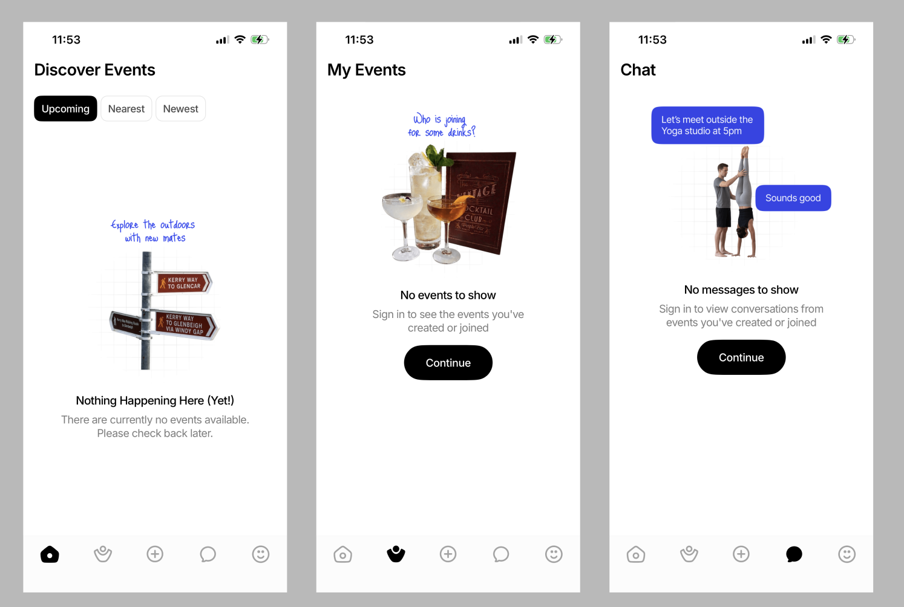
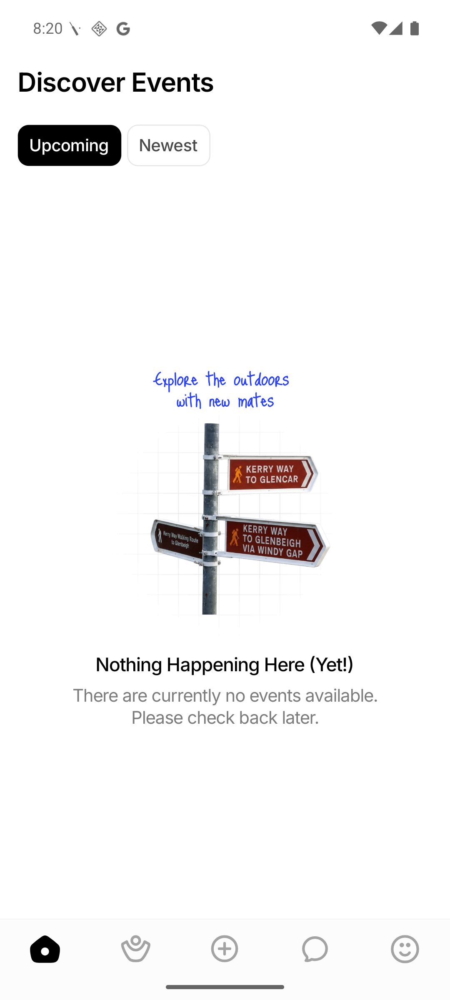
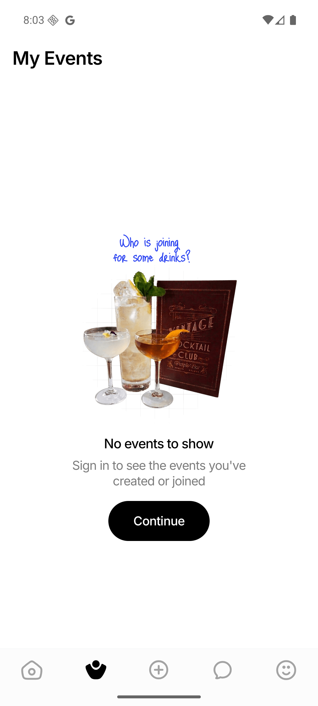
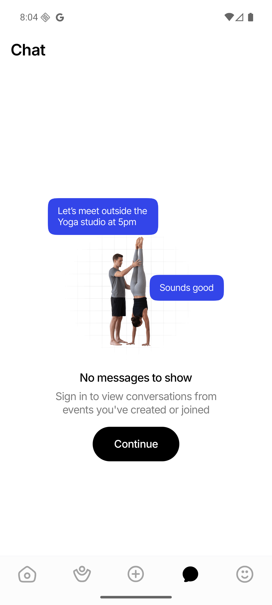
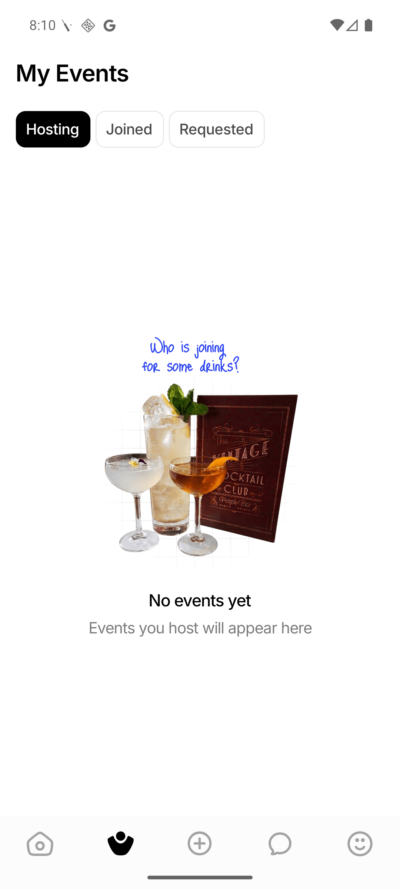
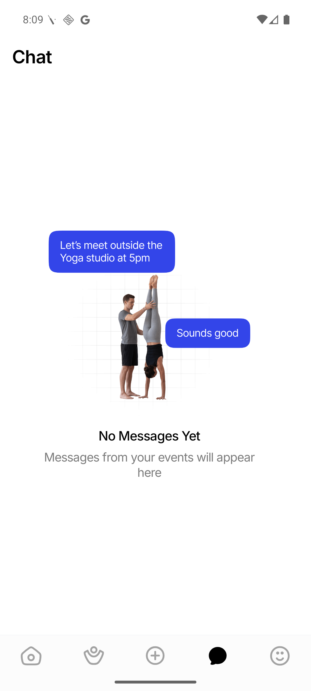

Empty states now align consistently
My Events and Chat previously positioned some empty states inside content-height wrappers, leaving them visibly too high. The affected signed-out and signed-in paths now fill their available content area and center the illustration-and-copy group consistently.
Reported state

Fixed states





Exact issue and root cause
The shared EmptyState intentionally sizes to its content. Full-screen callers
must therefore provide the available height. Discover and signed-in My Events already did
this through EventSectionList; signed-out My Events, signed-out Chat, and the
signed-in Chat FlatList empty component did not. Those three paths
consequently used intrinsic height and were top-biased.
The fix is deliberately scoped to those full-screen call sites: each passes a
flex: 1 style to EmptyState. This preserves compact empty states
in sheets and cards while restoring full-height centering where the screen owns the space.
<EmptyState
...
style={styles.fillEmptyState}
/>
fillEmptyState: { flex: 1 }Measured reproduction
On the 1080 × 2400 emulator, the signed-out My Events wrapper changed from
[42,299]–[1038,1469] to [42,299]–[1038,2337]. Its title moved
from y=1047 to y=1481. Signed-out Chat now fills [42,278]–[1038,2337]; the
signed-in Chat title is centered at y=1487 within the same screen region.
Validation
-
Android emulator
WEIF_API_36, 1080 × 2400: Discover and all four authentication-specific states passed visual inspection. - Discover was captured against an isolated API returning an empty event list, without altering the shared development database.
- Authenticated proof used a fresh zero-data dev identity; the temporary preset was reverted after capture.
- Targeted Jest validation: 4 suites and 104 tests passed.
- Strict TypeScript validation: passed.
- Lint: 0 errors; 899 pre-existing baseline warnings.
- Touched-file Prettier validation: passed.